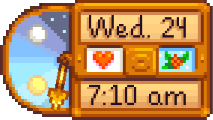

Matrimonio:
En el modo de un jugador, el Matrimonio solo es posible con un aldeano que esté marcado como "Sin pareja" en la pestaña Social del inventario.
Antes de proponer matrimonio, el jugador necesita ganar 10 corazones de amistad con su futuro cónyuge, lo que requiere haber entregado primero un ramo de flores a los 8 corazones de amistad. También tendrán que mejorar la Casa de campo al menos una vez y tener acceso a la zona de la Pozas de marea de La Playa. El libro perdido Guía de matrimonio para granjeros también explica este proceso.

Romance
El romance sólo puede comenzar una vez que hayas alcanzado 8 corazones con una pareja potencial (donde los niveles de amistad se congelan para los candidatos al matrimonio).
Salir con alguien
A la mañana siguiente de que alcances por primera vez los 8 corazones con un candidato a matrimonio, Pierre te enviará un mensaje por correo para informarte del ramo de flores (  200 en la Tienda local Pierre's)
200 en la Tienda local Pierre's)
“Parece que empiezas a llevarte bien con algunos de los vecinos. Si quieres mostrar interés amoroso por alguien, tendrás que regalarle uno de mis hermosos ramos de flores. ¡Ya están a la venta, y por un módico precio! Si algún día quieres formar una familia, ¡este es el primer paso!” — Pierre
Dar el ramo descongela el nivel de amistad con ese soltero o soltera, permitiendo que la amistad avance. Al aceptar el ramo, su estado en la pestaña Social también cambia a "novio" o "novia". El ramo de flores se puede dar a varios candidatos, sin tener en cuenta el género. No hay penalización de amistad por dar ramos a candidatos "rivales", aunque hay un Evento de diez corazones grupal que puede causar que todos los chicos/chicas te den la espalda durante una semana.
Ruptura
Dar a un candidato a matrimonio un Ramo de flores marchito pone fin a la relación de pareja. El nivel de amistad del candidato a matrimonio bajará inmediatamente a 5 corazones al recibir uno, y tendrá reacciones únicas al recibirlo.
Proponiendo matrimonio
Al día siguiente de alcanzar 10 corazones de amistad con un candidato a matrimonio, el jugador recibe una carta del alcalde Lewis:
“Te voy a dar este consejo porque me caes bien y quiero que te quedes en Pueblo Pelícano. Si llegado el momento quieres pedir matrimonio a alguien, tendrás que darle un «colgante de sirena». No te preocupes, todo el mundo en Pueblo Pelícano sabe cuál es el significado del colgante. Es una tradición antigua de esta región. ¡Mucha suerte!” — Lewis
Para comprometerse, el jugador debe presentar un Colgante de sirena a su futura pareja. Tendrá que comprarlo por Gold.png5000o de oro al Viejo marinero, que puede encontrarse los días de lluvia en las pozas de marea de La Playa (a las que solo se puede llegar reparando el puente por 300 de madera o comprando la segunda mejora de comunidad a Robin). Durante el Invierno, sólo aparecerá si se usa un Tótem de lluvia. No venderá el colgante a menos que la casa de campo haya sido mejorada al menos una vez, el jugador tenga 10 corazones con un aldeano elegible y el jugador no esté ya casado.
Una vez aceptado el Colgante de sirena, el Calendario tendrá un icono de Colgante de sirena el día de la boda.
La Boda
| El icono del tiempo se sustituye por un corazón el día de la boda. |
|---|
|  |
La ceremonia de la boda tiene lugar por la mañana, 3 días después de que te declares. Es decir, si te declaras el lunes 1, la escena de la boda tendrá lugar en cuanto te despiertes el jueves 4. Una vez finalizada la ceremonia, tú y tu cónyuge apareceréis en la casa de campo a las 6 de la mañana (en el porche, o si has reiniciado o recargado el día de juego, dentro de la casa). A partir de ese momento, el día sigue su curso normal. La amistad con tu cónyuge puede alcanzar ahora los 14 corazones, pero decae 20 puntos al día siempre que no haya contacto entre ambos.
La ceremonia de la boda no se celebra un día en que tenga lugar otro acontecimiento en la plaza del pueblo. En tales casos, la boda se retrasa hasta que haya un día sin tal evento.
El día de la boda, el icono del tiempo que aparece entre la fecha y la hora se sustituye por un corazón. Además, ese día siempre hará sol, independientemente de la previsión del informe meteorológico del día anterior.
Vida de casado
Una vez que un aldeano se haya casado, se mudará a la casa de campo. Tendrán un máximo de 14 corazones en vez de 10, y manteniéndolos felices hará que ayuden en la granja. Un esposo(a) feliz hará el desayuno, alimentará a los animales, reparará vallas y regará los cultivos. Ellos ocasionalmente cambiarán el papel de pared o suelos de la casa de campo, o añadirán un mueble a una habitación. Interactuar con tu cónyuge cuando no haya un diálogo disponible resultará en un abrazo.
También es posible tener hijos bajo ciertas circunstancias.
Una vez casado, el límite de regalos desaparece, sin embargo, aún aplica el límite de un regalo por día.
Tareas del cónyuge
- Regar todos los cultivos en la granja (en primavera, verano, y otoño).
- Alimentar todos los animales.
- Llenar el bebedero del perro/gato.
- Reparar vallas rotas.
- Dar regalos, incluidos platos de desayuno y cena. (Si el inventario está lleno, no se recibirá el artículo).
Fruta estelar
Tras alcanzar los 12,5 Corazones (3125 puntos de amistad) con su cónyuge, el jugador puede recibir una Fruta estelar como símbolo de su amor. En las partidas multijugador en las que dos jugadores se casan entre sí, la Fruta estelar aparece como regalo en una cajita morada junto a la cama de cada jugador al despertarse por la mañana.
Sólo se puede obtener una Fruta estelar de esta manera por archivo guardado, o una vez por jugador en Multijugador.
Habitaciones de los cónyuges
Una vez casado, el cónyuge del jugador creará inmediatamente una habitación exclusiva dentro de la Casa de campo, situada a la derecha del dormitorio. Ten en cuenta que el loro de Emily no será visible para nadie en multijugador que no haya completado su evento de 4 corazones.
Área exterior del cónyuge
Además de su habitación dentro de la casa, cada cónyuge tiene una zona exclusiva detrás de la casa de campo.
Agotamiento
Besar a tu pareja eliminará el agotamiento de tu barra de energía. Esto solo funciona con el primer beso del día, cuando aparece un corazón sobre sus cabezas.
Casa desordenada
Si un objeto obstruye el paso de su cónyuge en la casa de campo, ellos dirán,
"Podrías haber limpiado un poco en mi ausencia... No es muy agradable sortear tanto trasto tras un día de duro trabajo."
Si hay monstruos dentro, como las babas, tu cónyuge preguntará,
"Um... ¿Cariño? ¿Por qué hay monstruos en la casa?"
Si la noche anterior no había una cama en casa, su cónyuge comentará su falta de sueño.
- "¿Dónde debo dormir...?"
- "No pude dormir bien anoche..."
- "Tuve que dormir en el suelo anoche..."
- "¿Le pasó algo a nuestra cama...?"
También se girarán con expresión molesta cuando intentes besarles.
Celos
Si das un regalo que no es odiado a uno de los otros candidatos al matrimonio cuando ya estás casado, existe la posibilidad de que tu cónyuge se ponga celoso. Esto sólo ocurre si el aldeano que recibe el regalo ya ha aceptado un ramo tuyo y es del mismo sexo que tu cónyuge; es decir, si te casaste con un soltero, sólo ocurre si haces un regalo a otro soltero. No importa si el regalo gusta o no, el único regalo que es seguro hacer es un regalo de cumpleaños. (Ten en cuenta que las misiones de entrega no cuentan como regalos). La probabilidad de que tu cónyuge se ponga celoso oscila entre el 20 y el 40%, dependiendo de la Suerte diaria. Si tu cónyuge se pone celoso, recibirás una penalización de 30 puntos de amistad, y la próxima vez que hables con tu cónyuge te dará un mensaje de enfado mencionando tu regalo.
Niños
Sólo puedes tener hijos si has mejorado la Casa de campo por segunda vez, añadiendo la guardería. Después de acostarte por la noche, tu cónyuge puede preguntarte aleatoriamente si quieres tener/adoptar un hijo. Puedes responder "sí" o "ahora no". Las parejas del mismo sexo adoptarán niños, y las parejas del sexo opuesto tendrán hijos biológicos.
Divorcio
Los jugadores pueden visitar la Mansión del alcalde, donde hay un pequeño libro dentro que les dará la opción de divorciarse de su cónyuge. Un divorcio cuesta 50 000. Después de solicitar el divorcio, los jugadores tienen la posibilidad de cancelarlo antes de que termine el día (hasta las 10:00 PM, hora en que Lewis cierra su casa). Si no lo cancelas, tu esposo(a) abandonará tu casa en la mañana siguiente y su nivel de amistad regresará a 0 corazones. Debajo de su nombre estará el estado
"(ex)".
Después del divorcio, el esposo(a) regresará a su antigua residencia, y tendrá interacciones negativas con el jugador citando el fracaso de su matrimonio. Tampoco aceptarán regalos del jugador. (Tenga en cuenta que el jugador puede seguir entrando en la habitación o casa del ex-cónyuge, como si tuviera 2 corazones de amistad con él). Cualquier hijo producto del matrimonio, se quedará en la casa de campo. Los objetos que el jugador hubiera depositado en la habitación de su ex se recogerán y se depositarán en un cofre al día siguiente del divorcio. Los cónyuges divorciados no asistirán a la boda del jugador ni le tratarán con normalidad durante los Festivales.
Los jugadores pueden visitar la Cabaña de la Bruja en el juego avanzado, donde encontrarán un altar que puede borrar todos los recuerdos de los ex cónyuges por una ofrenda de 30 000 (esto también borrará la memoria de Krobus si es un ex compañero de piso)., y después de que se haya hecho, tu ex no tendrá memoria del matrimonio que ha tenido, permitiendo a los jugadores salir a citas y casarse nuevamente si desean. Ten en cuenta que si el jugador decide volver a casarse no verá los eventos de corazón del soltero/soltera vistos anteriormente, ya que los eventos de corazón sólo se pueden ver una vez por archivo guardado, o una vez por jugador en Multijugador.
Los niños del matrimonio también se pueden "convertir en palomas" en la Cabaña de la Bruja a cambio de una Esquirla prismática. Esto elimina permanentemente a dichos hijos del juego, pero se pueden tener más hijos con otra pareja. (Ten en cuenta que si se solicita el divorcio y luego se cancela el mismo día, se pueden tener más hijos con la misma pareja).
Si el jugador está esperando un hijo y se divorcia, el niño no nacerá ni será adoptado.